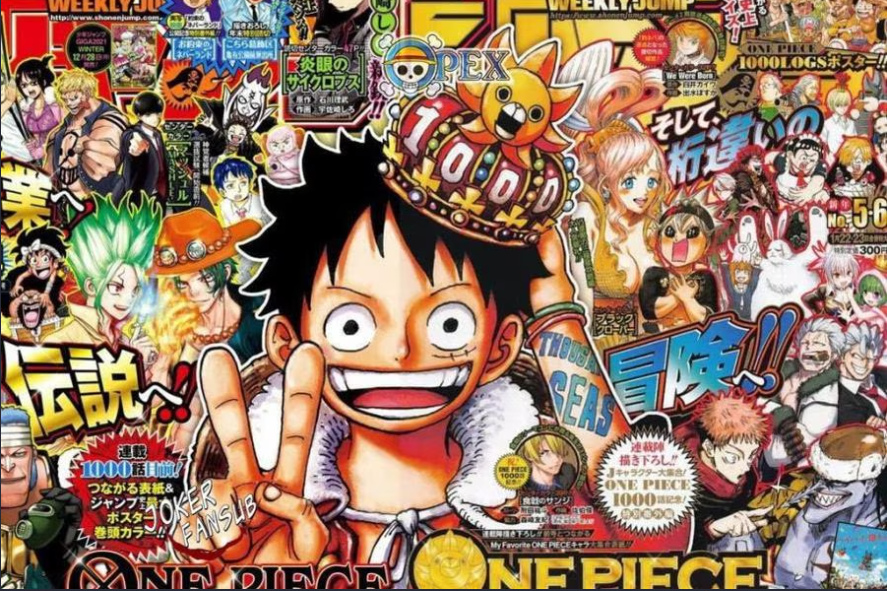

Sipnosis
Roger "El rey de los Piratas" sería ejecutado públicamente, pero antes de morir sus últimas palabras fueron que su tesoro, el One Piece, se encontró escondido en algún lugar de Gran Line, y que cualquiera que lo encontrara, podría tomarlo como suyo. Esta serie actualmente tiene más de 20 años publicándose de manera continua, habiéndose publicado más de 98 volúmenes recopilatorios e inspirado una adaptación animada que realiza Toei Animation la cual es trasmitida por Fuji TV desde el 20 de octubre hasta el día de hoy. One Piece se ha convertido en el manga más exitoso de la historia., ¿hasta dónde llega la influencia de One Piece? La serie escrita e ilustrada por Eiichirō Oda después de más de 1000 capítulos publicados en la revista de Shūeisha se ha convertido no solo en la serie manga que más ingresos ha generado, sino también en la más popular a nivel mundial, siendo conocida no solamente entre los niños, sino en toda clase de público
Autor
Eiichiro Oda, nacido el 1 de enero de 1975 en la prefectura de Kumamoto es un mangaka japonés, conocido por ser el creador del manga One Piece. Dado el gran éxito que One Piece ha cosechado es el creador de manga que más dinero ha ganado así como el que más copias ha vendido y es considerado, junto a Akira Toriyama, uno de los dibujantes más influyentes de la historia de Japón .En México fue publicado por Editorial Toukan,22 más tarde pasando a manos de Editorial Panini.2324 One Piece es el manga más vendido de la revista Weekly Shōnen Jump (la más importante, reconocida y vendida del medio), de la Editorial Shueisha, y de toda la historia de Japón, con más de 516 millones de copias vendidas a nivel mundial (416 millones en Japón, y 100 millones en 60 países juntos),34567891011 y en Japón fue el manga más vendido de manera consecutiva desde el año 2007 hasta 2018 logrando un récord histórico. Comenzó a publicarse en la revista Japonesa Weekly Shōnen Jump el 22 de julio de 1997 y a la fecha se han publicado 105 volúmenes.